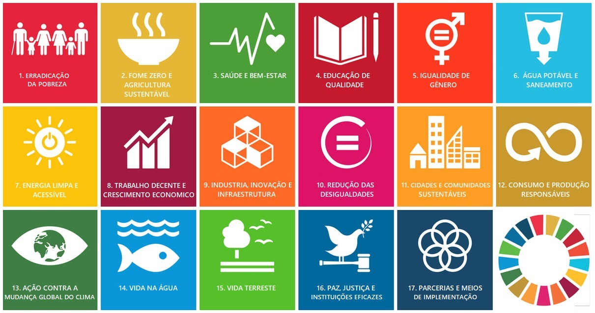

Projeto interdisciplinar para o Ensino Médio da rede pública estadual | Conectando juventude, cidadania e a Agenda 2030 da ONU
A Organização das Nações Unidas (ONU) é uma organização internacional fundada em 1945, após a Segunda Guerra Mundial, com o objetivo de promover a paz, a cooperação entre os países e o desenvolvimento social e econômico global. Em 2015, todos os Estados-membros da ONU adotaram a Agenda 2030 para o Desenvolvimento Sustentável, um plano de ação ambicioso que contém 17 Objetivos de Desenvolvimento Sustentável (ODS) e 169 metas integradas.
Os ODS abrangem dimensões essenciais: social (fome, saúde, educação), econômica (trabalho decente, inovação) e ambiental (clima, consumo sustentável). A ideia é que nenhum país seja deixado para trás, com foco especial em comunidades vulneráveis. No Brasil, o compromisso com a Agenda 2030 envolve governos, empresas, escolas e sociedade civil. No Paraná, a rede pública estadual tem incorporado os ODS em projetos pedagógicos, incentivando o protagonismo juvenil para transformar a realidade local.

Fonte: Nações Unidas Brasil. Os 17 ODS integram a Agenda 2030 para o Desenvolvimento Sustentável.
Com base nos três projetos completos disponíveis (Educação de Qualidade, Fome Zero e Agricultura Sustentável, Ação contra a Mudança Global do Clima), desenvolvemos ações práticas para diferentes séries do ensino médio. Confira os destaques:
Turma: 2º ano EM
Projeto: "Jovem Protagonista" – diagnóstico participativo, monitoria entre alunos,
feira de talentos digital e campanha anti-evasão.
Integração: Matemática (estatística), Português (argumentação), Sociologia.
Turma: 3º ano EM
Projeto: "Cultivando o Futuro" – horta agroecológica, diagnóstico do desperdício, feira
de sementes, roda com agricultores familiares.
Integração: Biologia (compostagem), Geografia (estrutura fundiária).
Turma: 1º ano EM
Projeto: "EcoAção Paraná" – pegada de carbono da escola, mutirão de árvores nativas,
gincana da reciclagem, desafio #EcoAção.
Integração: Biologia, Geografia, Matemática (gráficos).
🔗 Cada projeto completo está disponível em arquivo próprio (clique nas abas acima para ver resumo expandido e acessar os materiais multimídia). Todos os projetos incluem vídeos, documentários e atividades interdisciplinares adaptadas à realidade das escolas públicas do Paraná.
Conteúdo baseado no arquivo fome_zero. Destinado ao 3º ano do Ensino Médio, o projeto mobiliza estudantes para discutir segurança alimentar, desperdício e agricultura sustentável, com ações dentro da escola e na comunidade.
⭐ Resultado esperado: Redução do desperdício, horta produtiva e fortalecimento da agricultura familiar.
📄 Ver projeto completo (ODS 2)Baseado no documento educacao_de_qualidade, este projeto é voltado para alunos do 2º ano do Ensino Médio (15 a 17 anos). O objetivo é transformar a escola em um espaço de inclusão, inovação e combate à evasão escolar, valorizando o protagonismo jovem e o uso da tecnologia.
⭐ Resultado esperado: Redução da evasão, fortalecimento da identidade escolar e engajamento cidadão.
📄 Acessar projeto completo (página original)Baseado em mudanca_global_do_clima. Focado no 1º ano do Ensino Médio, o projeto engaja os jovens no diagnóstico da pegada de carbono escolar e em ações de mitigação, adaptação e conscientização sobre a emergência climática.
⭐ Resultado esperado: Escola mais sustentável, jovens multiplicadores de boas práticas e redução da pegada ecológica.
📄 Acessar projeto completo (ODS 13)